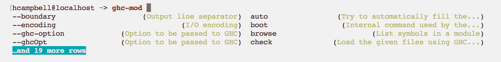

Announcing optparse-applicative 0.14.0
I’m very pleased to announce the next major version of optparse-applicative. I was meaning to release this last month, but I had a baby last month instead, which has taken up quite a bit of my time. Still, it’s been a pleasure to put this release together, and I hope people enjoy the results. In this post, I’ll mention a few of the new features and fixes.

Bash, Zsh, and Fish Completions
If you’re not yet using the completions scripts for optparse it’s well worth giving it a try now. I’ve fixed quite a lot of bugs, and added a few things which almost completely negate the need for writing custom shell scripts for completions for optparse programs at all.
The first few bugs related to how bash compgen actions were called, and these bugs got pretty ugly at times. For example, if one tried to complete a term which was partially quoted, such as
> example 'Documents/<tab>then a particularly awful error message regarding syntax errors would be emitted to stderr by the called bash process as it tried to find the close to the quotion.
The solution was to dequote any quoted or partially quoted string,
then hard quote it again before passing it to the compgen builtin
in bash. This also had the added benefit of fixing one of my personal
annoyances for our completion system – premature expansion of ~ in
a path completion: where
~/Doc<tab>would become
/home/huw/DocumentsThis is now fixed, and the ~ does not get rewritten on the command
line by a bash completion.
Beyond bash though, we now support much richer completions for zsh and fish shells. What’s particularly nice is that these completions also now can include the help descriptions for the items being completed.
Here is an example screenshot when using fish shell using only the uncustomised optparse generated completion script

A similar level of detail is available with zsh completions as well.
Error Messages
One of my focuses for this release was to ensure that optparse gives a great error message for every type of failure we emit (this has actually been a focus of mine for some time); and there was one which was oddly handled by default.
Since 0.5 option has had a builder, noArgError which one can use
to specify the error message shown to a user if they do not provide
an argument for the respective option. We have used this for the
provided helper parser for instance such that it always shows the
help text. The default for this was a conspicuously unhelpful though,
being ErrorMsg "". Now instead of not receiving an error message,
one should see
The option `--bash-completion-script` expects an argument.for example. This did require a change to the internal types to store the name of the option, but I managed to keep the builder api the same, so one can still use the old builder to change the error message if they desire.
Combined with other error message improvements mentioned in my previous
post I don’t
think one will ever receive an unhelpful or absent error message from an
optparse-applicative parser going forwards, which I think is a great
improvement.
Suggestions
When an option, flag, or subcommand can’t be parsed, or no match for it could be found, we now can emit some suggestions of terms which the user may have meant. This is based off the edit distance between the entered argument and the possible items the parser knows about. Details regarding the implementation, are available in my last post
The end result looks a lot like git’s command completion, and is quite nice I think
Invalid argument `installl'
Did you mean this?
installInvalid option `-x'
Did you mean one of these?
-v
-hNo Interperse and Forward Options
Optparse has had a no intersperse option builder for a good while
(since 0.7), but its description and behaviour didn’t actually
match. When a parser was called with noInterperse applied, it
would behave the same as if the user had typed -- at the start
of the command: that is, no options would be parsed. In other parsing
libraries with no intersperse options on (and old unix command line
guidelines), one has to place all options before any arguments.
Once a single positional argument is parsed, all remaining options
are treated as positional as well. We now behave in the same way.
Fixing this issue inspired me to also alleviate a pain point which
my colleagues and I had been having regarding mixing arguments and
wrapping commands. At Ambiata, we created a build tool called
mafia which acts as an opinionated wrapper around cabal,
providing a nix like package cache, safe sandboxing, and submodule
handling amongst other things.
When using it though, to pass an option to cabal underneath, the
user would need to first use -- to tell optparse to treat all
remaining options as arguments, and the argument list would be sent
to cabal. Now, with the forwardOptions builder attached when
creating the parserInfo structures, any unrecognised options to
mafia can be passed through as is. I believe this will actually
help in quite a few places where people are using mixed environments
(such as a C
command line parser).
Polymorphic String
Text and Bytestring are pervasive in the Haskell ecosystem, so it
was annoying that optparse-applicative didn’t support them trivially
out of the box.
The builders we have provided for some time are
str :: ReadM String
auto :: Read a => ReadM awhich I have found quite funny, in that auto is good for simple types
apart from string like ones (which require quoting when used with read)
while str requires an fmap pack to make it work with Text. From 0.14
onwards these will be
str :: IsString a => ReadM a
auto :: Read a => ReadM awhich means that the str reader will be able to deal with String,
Text, and ByteString, as well as their lazy equivalents without
requiring the user to jump through any hoops. Other builders and
helpers such as strOption and strArgument have also been updated
to be polymorphic over IsString in the same manner. This is a mildly
breaking change, but I think it’s worthwhile.
If one has been using str for the purposes of type inference (as
we were in the optparse-applicative test suite) then type signatures
may now be required, or the use of readerAsk, which is still fixed
to a single type. As there’s not a lot of purpose in requesting a
value and not using it, I don’t think many users will see any update
issues from this change at all.
Explicit Module Exports
The final big thing I have done before release is to remove the
module reëxports from the Options.Applicative module and explicitly
export a public API.
This should make things more robust going forwards, and let people know exactly what is a supported and useful part of the API, instead of having them have to infer if something is actually internal to the library.
In doing this I have actually removed a few function exports which
were internal or deprecated, and added the ParserHelp type (which
is useful) to the main module exports.
Again, this is a minorly breaking change, it is however quite unlikely that it will cause issues for most users, and indeed, it should make it easier to maintain a rock solid API going forwards.
Thanks
Thanks to Paolo Capriotti for trusting me to maintain his library, and to those who have submitted patches and bug reports and given advice. Herbert Valerio Riedel was especially helpful with keeping things compatible across past and (with any luck) future versions of GHC.